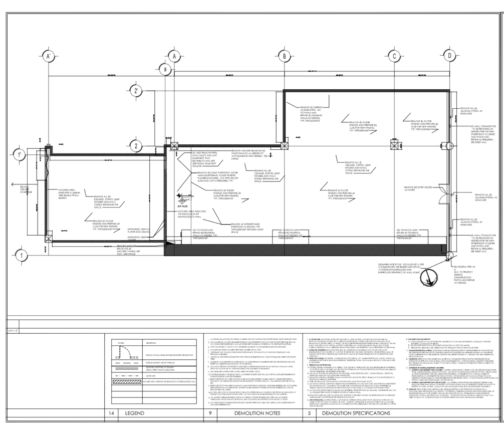
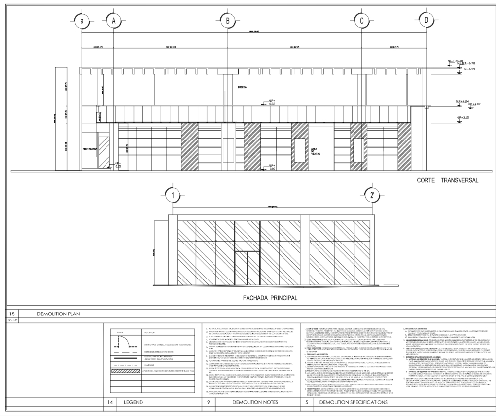
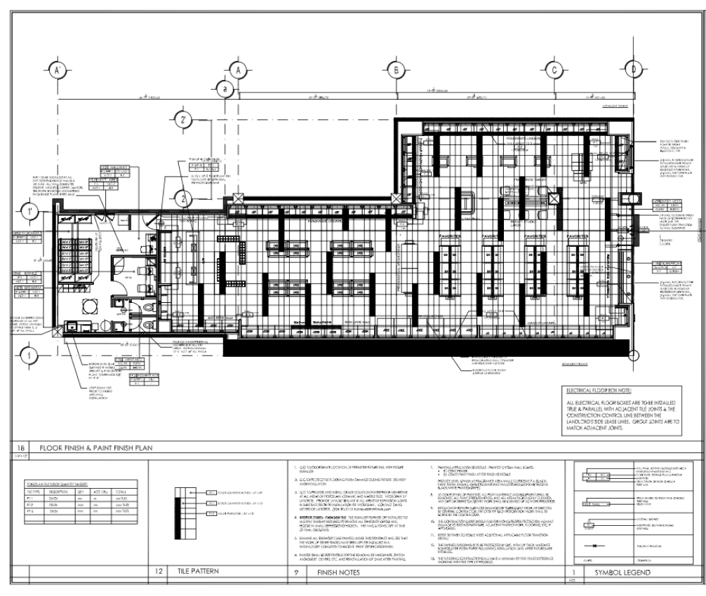
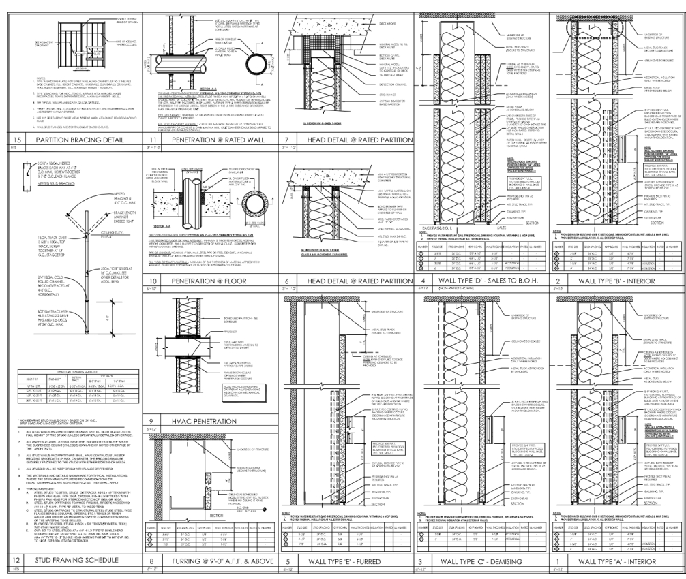

The brief
Across two roles, I worked on retail environments for international brands. Each project had to meet established design standards while responding to the layout of the premises, local material availability, construction requirements, budgets, and opening schedules.
My first role focused on adapting boutique designs and developing the drawings for construction. In my second role, I reviewed work across boutique and shop-in-shop locations, checking that contractors and vendors delivered against the approved standards.
Adapting boutique designs to the site
I adapted interior design standards from international brand teams to individual retail units. The layouts considered how customers would enter and move through the space, how merchandise would be displayed, and how the storefront would connect with the interior.
Once the layouts were confirmed, I developed floor plans, storefront drawings, elevations, sections, finish plans, and renderings. I coordinated the placement of lighting, audio, and other building services with engineering specialists, who developed the associated calculations and technical requirements. I assembled the drawings for mall administration review and coordinated approvals with local operators and brand representatives.
Selected Drawings




Localizing materials and finishes
Some specified finishes were costly to import. I compared locally available products and suppliers against the intended appearance, quality, and budget. I communicated proposed substitutions and incorporated agreed selections into the drawings and specifications.
Once the materials and design were approved, I worked with the project team to develop construction schedules and budgets.
Supporting construction and opening
I visited sites during construction to review workmanship and check installations against the approved drawings. When changes were agreed on site, I documented them and kept the project team informed. I prepared weekly progress reports, tracked costs, and presented supporting documentation during public safety inspections. My involvement continued through handover and operational training.
For a separate beauty retail assignment, my work focused on drawing revisions and quality reviews before opening, followed by maintenance support once the store was operating.
Reviewing quality across multiple locations
In my store planning role, I reviewed plans prepared by contractors and vendors, coordinated budgets, and checked work during production, construction, and installation. My assignments included more than 15 shop-in-shops as well as separate boutique projects.
I checked fixtures, furniture, lighting, signage, and finishes against the applicable brand standards and signed off within my assigned scope. For projects in Chile, I reviewed reports from the local vendor, followed up on items that needed clarification, and approved the work before handover.
Managing fixtures beyond installation
I also maintained a warehouse inventory of store fixtures and assets, including lighting, furniture, and mannequins. I used a dashboard to track depreciation and inform upgrade and replacement planning. That gave the team a way to assess what was available for reuse and what needed replacing across locations.